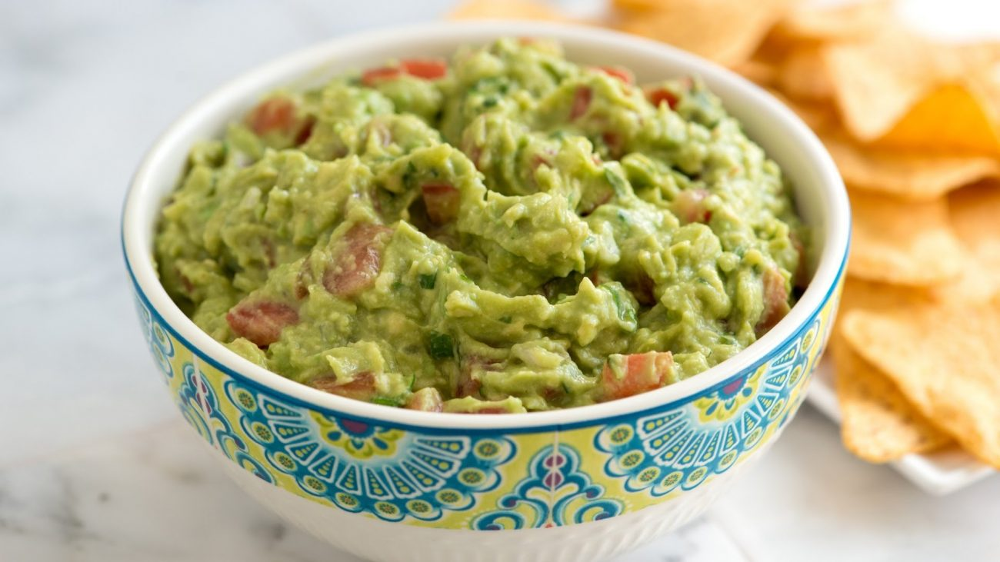

Lasagna Recipe

traditional maxican guacamole
Guacamole is a staple of Mexican cuisine. Although it is pretty simple to make, it can be tough to get the perfect flavor. With this authentic Mexican recipe, though, you will be an expert in no time.
Ingredients
- 2 avocados, peeled and pitted
- 1 cup chopped tomatoes
- ¼ cup chopped onion
- ¼ cup chopped cilantro
- 2 tablespoons lemon juice
- 1 jalapeno pepper, seeded and minced (Optional)
- salt and ground black pepper to taste
Steps
- Mash avocados in a bowl until creamy.
- Mix tomatoes, onion, cilantro, lemon juice, and jalapeno pepper into mashed avocado until well combined; season with salt and black pepper.